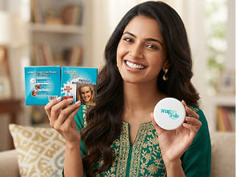
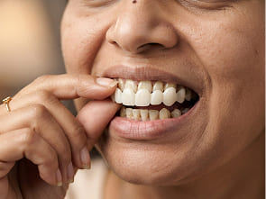

Что такое Snap-On Veneers?
Съёмная косметическая конструкция для вашей улыбки
Надевается поверх зубного ряда и помогает визуально сделать улыбку более ровной и привлекательной.

Что такое Snap-On Veneers?
Надевается поверх зубного ряда и помогает визуально сделать улыбку более ровной и привлекательной.
1–2 минуты — материал становится мягким и податливым

Накладка садится по форме твоего зубного ряда

Эффект держится весь день, снимать можно на ночь